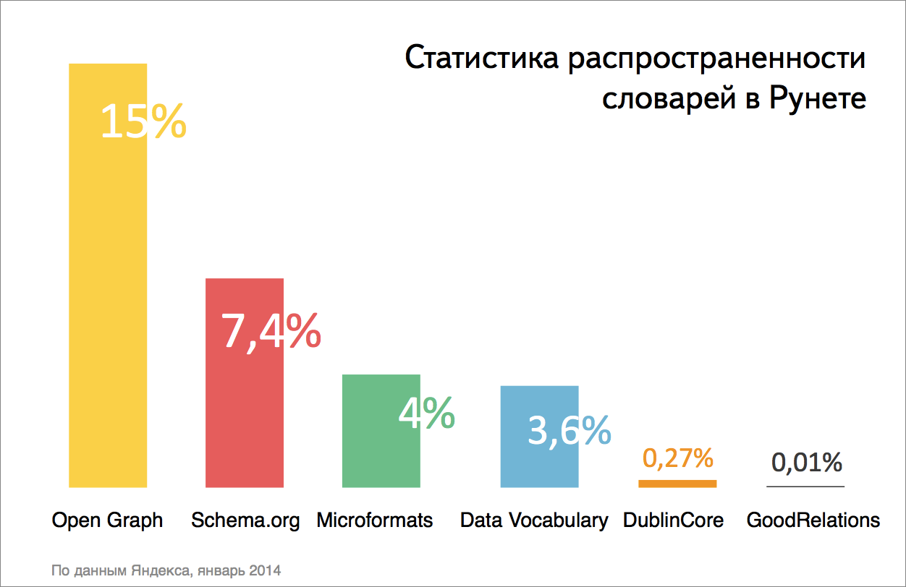

Что такое словари
Словарь — это своеобразный «язык», набор классов и их свойств, с помощью которых указывается суть содержимого на странице. Например, словарь определяет, с помощью какого термина указывать название — «name», «title» или «n».
Семантическая разметка развивалась поэтапно, в свое время разные инициативные группы брались за разработку концепции. И в итоге получился винегрет из разных словарей и синтаксисов — их довольно много и сначала разобраться со всеми ними далеко непросто.
Сама микроразметка напрямую не влияет на позиции сайта в поиске, но косвенно помогает привлекать трафик и повышает кликабельность. Красивые информативные сниппеты побуждают активнее взаимодействовать с сайтом, улучшаются поведенческие факторы, а следовательно, и ранжирование.
Наиболее распространенные словари

Open Graph
Open Graph (OG) — это самый распространенный и простой словарь. Сейчас Open Graph чаще всего используют для того, чтобы публикуемые ссылки с сайтов были расширенными, красивыми и понятными. С разметкой OG ссылки будут так показываться по всех популярных соцсетях.
Также разметка Open Graph активно используется приложениями для Facebook* (продукт запрещенной в РФ компании Meta) — она позволяет пользователям отражать действия из приложений на своих страничках.
Благодаря OG можно смотреть видео, читать краткое описание статьи и быстрее понимать суть информации, которой делятся друзья, просматривая бесконечные ленты новостей. Помимо Facebook разметку Open Graph распознают также Вконтакте, Google+, Pinterest и другие.
Сам словарь достаточно лёгок в применении — для начала использования нужно 4 свойства:
Например, разметка Open Graph для описания человека выглядит так:
<html prefix="og: http://ogp.me/ns#
profile: http://ogp.me/ns/profile#">
<head>
<meta property="og:title" content="Юрий Гагарин" />
<meta property="og:type" content="profile" />
<meta property="og:url" content="http://example.com/Гагарин" />
<meta property="og:image" content="http://example.com/" />
<meta property="profile:first_name" content="Юрий" />
<meta property="profile:last_name" content="Гагарин" />
<meta property="profile:gender" content="male" />
...
</head>
...
</html>
Здесь робот распознает, что страница посвящена мужчине по имени Юрий Гагарин, на ней есть ссылка на его фото. Здесь такое свойство как url указывается как канонический URL страницы.
В теге og:type помимо типа «profile» могут быть указаны различные типы сущностей (у которых есть еще свои свойства):
Если не использовать такую разметку на странице сайта, то при публикации ссылки в Facebook система в любом случае попробует построить превью. Но, как правило, это выходит далеко не так удачно — вместо картинки к статье может отражаться логотип с сайта, заголовок может быть заменен названием какой-нибудь категории сайта и в краткое описание статьи попадет текст из истории компании, который не будет отражать суть статьи (и вряд ли порадует пользователя).
Schema.org
Schema.org — это словарь, который появился по инициативе поисковых систем в 2011 году. Его поддерживают Яндекс, Google, Bing и Yahoo!
В Schema.org также представлены наборы классов, описывающих различные сущности и их свойства. Но если в OG и Microformats.org такие классы исчисляются десятками, в Schema.org их уже несколько сотен. Все классы имеют свое место в древовидной иерархии.
Это живой и гибкий словарь. Новые сущности активно обсуждаются перед добавлением: для этого участники инициативной группы еженедельно встречаются и обсуждают внедрение, расширение и использование схем.
Наиболее обобщенный тип сущности — это Thing, у которого есть подтипы. Рассмотрим несколько из них:
- Action — описывает действие, которое может выполнятся кем-то определенным (человеком или организацией). У этого действия может дополнительно быть указано место, объект и инструменты, с помощью которых оно было совершено. Как у любого действия, у него может быть результат, участники и период времени, в течение которого оно совершалось.
- CreativeWork — описывает особенности творческих работ. Видео, картинки, рецепты, диеты — все может быть описано с помощью этого типа. У всех творческих работ можно указать автора, жанр, краткое описание, а также отзывы, аудиторию, упоминания и многое другое.
- Event — как у любого мероприятия, здесь можно описать место проведения, дату, участников, выступающих и т.д.
- Product — это все, что продается и покупается. Некоторые платные сервисные услуги (как, например, стрижка) тоже могут быть описаны типом Product. У продукта может быть указан рейтинг, бренд, цвет, аудитория, цена, модель и т.д.
- Person — как указано в документации Schema.org, это может быть человек — живой, вымышленный или уже умерший, — а также «undead» (видимо, создателям нужно было описать еще зомби и не нашлось более подходящего типа). У людей могут быть указаны контактные данные, информация о работе, семье, отношениях и многое другое.
Также предусматривается возможность расширять словарь по инициативе пользователей и вебмастеров.
Существует публичная рассылка на английском языке public-vocabs@w3.org, созданная для обсуждения общих вопросов, предложений и сообщений об ошибках, куда также можно написать письмо с вопросом о разметке, если у вас не получается что-то внедрить. Есть механизм расширения, а также с мая 2011 года можно использовать списки на внешних ресурсах для указания различных свойств.
Пример разметки Schema.org для типа Person:
<div itemscope itemtype="http://schema.org/Person">
<span itemprop="name">Юрий Гагарин</span>
<img src="gagarin.jpg" itemprop="image"/>
<span itemprop="jobTitle">Летчик-космонавт</span>
<span itemprop="colleague">Валентина Терешкова</span>
<link itemprop="nationality"href="http://ru.wikipedia.org/wiki/Россия">Россия
<time itemprop="birthDate" datetime="1934-03-09">9 марта 1934</time>
<span itemprop="memberOf">Военно-воздушные силы СССР</span>
<span itemprop="knows">Сергей Королев</span>
<time itemprop="deathDate" datetime="1968-03-27">27 марта 1968</time>
<span itemprop="award">Герой Советского союза</span>
<a href="http://ru.wikipedia.org/wiki/Гагарин,_Юрий_Алексеевич" itemprop="sameAs">Страница на Википедии</a>
<a href="http://example.com/Гагарин" itemprop="url">Сайт Юрия Гагарина</a>
</div>
В такой разметке поисковая система распознает, что человек по имени Юрий Гагарин является летчиком-космонавтом и является коллегой Валентины Терешковой. Также указано много других данных: его награда, национальность, дата смерти, знакомства и другие — некоторые из этих свойств можно указать только с помощью словаря Schema.org. Здесь есть две ссылки, размеченные с помощью свойств «sameAs» и «url», где в первом случае указывается страница с достоверной информацией о человеке, а во втором — ссылка на личный сайт.
Хочется еще раз отметить, что Schema.org — это инициатива поисковиков. И развитие словаря будет зависеть от создания продуктов поисковыми системами для сайтов. Поэтому не стоит воспринимать этот словарь как попытку привести к единой онтологии все существующее на свете. Все существующее в интернете — возможно. Но если это будет нужно поисковым системам.
А в создании большого количества продуктов для сайтов на основе Schema.org, в том числе для русскоязычных, поисковые системы безусловно заинтересованы.
Познакомиться с полным описанием словаря можно на официальном сайте. Существует неофициальный и пока неполный перевод стандарта на русский язык на сайте.
Microformats
Microformats.org (Микроформаты) — это открытый стандарт, созданный в 2007 году сообществом энтузиастов. Это сообщество очень хотело создать стандарт для семантической разметки сайтов, используя ранее существующие технологии. Шесть лет назад это было определенным плюсом стандарта, так как его было проще внедрять, но сейчас добавлять разметку микроформатов не проще, а в некоторых случаях и сложнее других словарей. По сравнению с OG и Schema.org, его используют все меньше и меньше.
На данный момент есть около 10 распространенных спецификаций микроформатов для нескольких предметных областей. Какие-то из них завершены, но большая часть находится на стадии черновиков. Существуют микроформаты для публикации сведений об организациях, товарах, отзывах, событиях и многих других сущностях. Каждая сущность имеет собственные свойства.
Разработка новых микроформатов происходит в открытом режиме, есть отдельная вики микроформатов. Из-за того что при создании каждого микроформата основатели стремятся договориться и найти компромисс со всеми, процесс длится очень долго, а порой и не заканчивается. Из-за этого доработанные микроформаты можно пересчитать на пальцах, а тех, что имеют статус черновиков довольно много.
В настоящее время поисковыми системами поддерживаются такие микроформаты:
- hCard — формат разметки контактной информации (адресов, телефонов и т. д.);
- hRecipe — формат для описания кулинарных рецептов;
- hReview — формат разметки отзывов;
- hProduct — формат разметки товаров.
Их использование дает возможность показывать специальные сниппеты в выдаче.
Один из самых популярных микроформатов — hCard. Микроформат hCard универсален для описания людей и организаций, содержит базовую информацию и о том и о другом.
Используя hcard можно указать такие свойства, как:
- n — имя;
- bday — дата рождения;
- geo — географическое расположение;
- tz — часовой пояс;
- uid — ссылка на идентичную сущность;
- photo — изображение;
- adr — адрес;
- org — название организации.
Это часть утвержденных свойств, есть также множество тех, которые находятся на стадии обсуждения. Вот как используется hcard в разметке описания человека:
<div class="vcard">
<img class="photo" src="http://example.com/gagarin.jpg" />
<strong class="fn">Юрий Гагарин</strong>
<span class="title">Летчик-космонавт</span> at <span class="org">Военно-воздушные силы СССР</span>
<a class="url" href=http://example.com/Гагарин>Страница Ю.Гагарина</a>
<div class="bday">
<span class="value-title" title="1934-03-09">9 марта 1934</span>
</div>
<span class="note">Первый человек в космосе</span>
</div>
Здесь поисковой системе понятно, что речь идет об организации либо о человеке по имени Юрий Гагарин — это летчик-космонавт, работавший в Военно-воздушных силах СССР. Также известна его дата рождения и есть заметка «Первый человек в космосе». Свойство url здесь указывает на домашнюю страницу описываемого объекта.
В 2013 была объявлена новая инициатива — microformats 2, в которой есть нововведения в названиях классов и упрощения для использования свойств.
Раньше микроформаты были довольно распространены, но сегодня, особенно на фоне других быстрорастущих словарей, они выглядят устаревшими. К тому же использование микроформатов ограничивает их формат — это объединенный стандарт синтаксиса и словаря, в котором нельзя использовать другие словари.